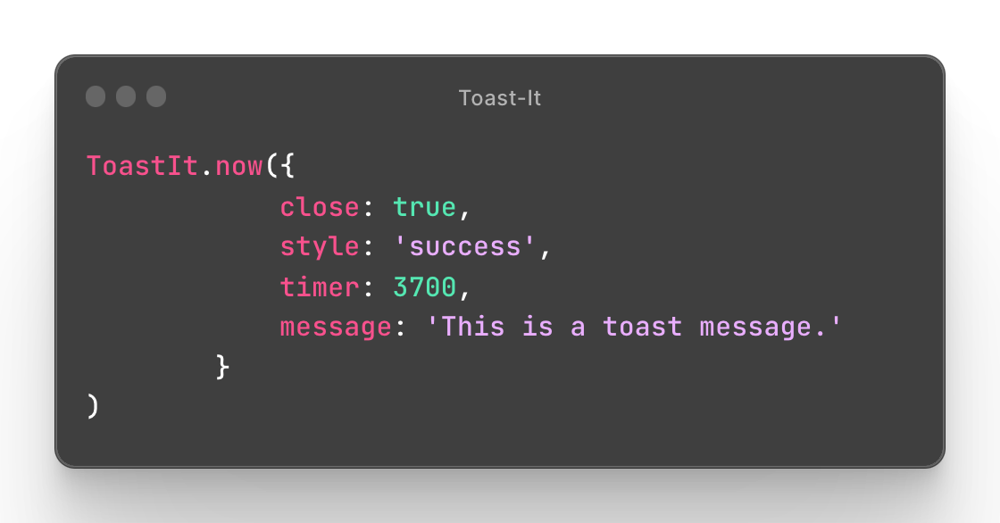

Looking for a quick download? 👀 Let's go to the official repo!
You can watch a sample Toast message at the top-right of the screen just by clicking the different buttons below.
Looking for a quick download? 👀 Let's go to the official repo!
A generic message. This colour is used as the default background colour if you miss or avoid to configure the style.
This message is using the classic blue colour to represent a very simple notification.
This message is using the classic green colour to represent a success notification.
This message is using the classic warning colour to represent a warning or a caution notification.
This message is using the red colour to represent an error message. Error messages are using a font-weight=700 by default.